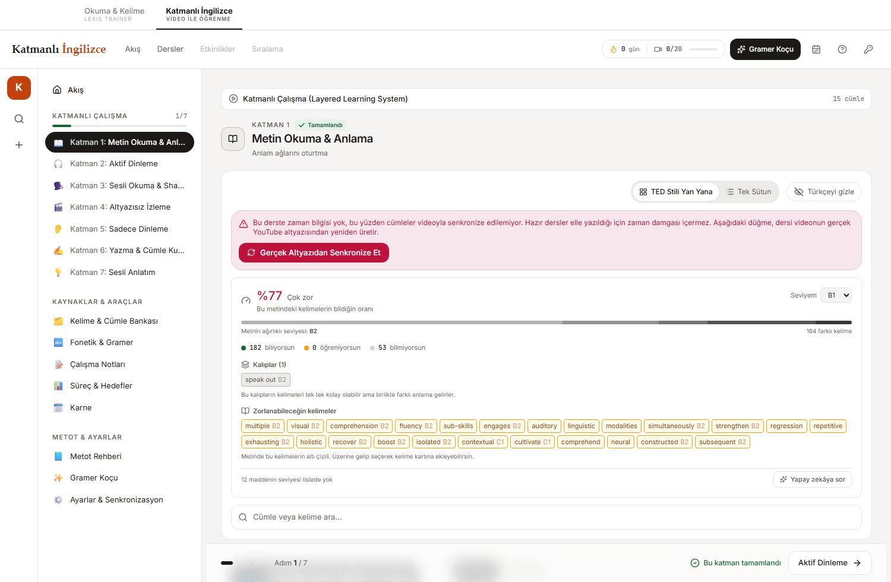

1
Metin Okuma & Anlama
Anlam ağlarını oturtma
Solda video, sağda çift dilli transkript. İngilizce cümlenin altında Türkçesi durur. Amaç kelime ezberlemek değil — cümle içindeki anlam ağını zihne oturtmak.
- TED Stili Yan Yana ile Tek Sütun arasında görünüm değiştirebilirsin.
- Türkçeyi gizle Türkçe satırları kapatır; kendini sınamak için.
- Her cümlenin yanındaki hoparlör simgesi o cümleyi sesli okur, artı simgesi notlarına ekler.
- Üstteki arama kutusu Cümle veya kelime ara... transkript içinde arar.
- Yapay zekâya sor takıldığın cümleyi gramer koçuna gönderir.

Zaman damgası uyarısı görürsen
Hazır dersler elle yazıldığı için cümlelerde zaman bilgisi yoktur ve videoyla senkronize
edilemezler. Gerçek Altyazıdan Senkronize Et düğmesi dersi videonun
kendi YouTube altyazısından yeniden üretir ve zaman damgalarını kazandırır.